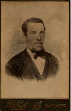
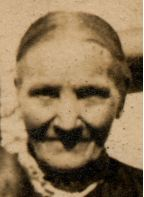

| John M. McCordick (~1812 - ) |
|
| Jane Lytle |
Robert Moore  |
Hannah McCordick |
| b. abt 1843, Ireland d. abt 1882 res. Ireland; Yonkers, New York; Baltimore, Maryland occ. Carpenter, grocer bur. cod. |
b. 13 Oct 1839, Ireland d. 7 Apr 1918, 726 North Patterson Park Avenue, Baltimore, Maryland res. abt Jul 1872 - 7 Apr 1918, Baltimore, Maryland occ. Grocer (poultry, butter, cheese, eggs) bur. 9 Apr 1918, Baltimore Cemetery, Baltimore, Maryland cod. Carcinoma of the liver |
Children
| > Thomas William Moore < John James Moore Eliza Jane Moore unknown Moore George Christopher "Christie" Moore Robert Moore unknown Moore Richard Moore |